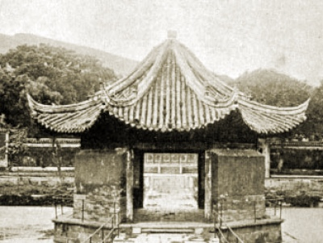

Sacred Texts Confucianism
|  | Sacred Places in Chinaby Carl F. Kupfer[1911] |
This is a travelogue by a 19th century Christian missionary who visited several sacred locations in China, including places holy to all three of China's principal religions: Taoism, Confucianism and Buddhism. The writer is not exactly neutral, but he is appreciative and knowledgeable. Kupfer brings an understanding of the deep time horizons and cultural context of Chinese traditional religion. He relates many fantastic stories of visions of Gods and Goddesses which manifested around these locations. He calls on religious leaders who live at these sites, including an audience with the 'Taoist Pope.' At the time of his visit, most of these temples were in disrepair, and given the successive history, that probably continued. This makes this little survey an important baseline inventory of Chinese religious centers prior to the upheavals of the Chinese revolution. This book is hard to find, and has not been reprinted since it was first published, as far as I can tell.--J. B. Hare, August 27th, 2008.